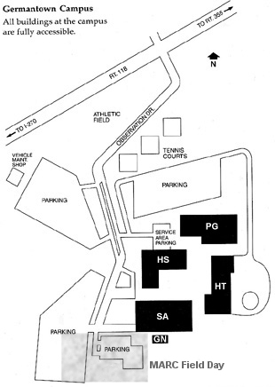

|
MARC will set up Field Day 2006 operations at the
Germantown Campus of Montgomery College on Saturday, June 24.
Setup will commence at noon and operations will continue
for 24 hours until midday on June 25. |
|
|  | Directions from Rockville: Follow I-270 north and take the exit for MD-118 East (Germantown Road, exit 15A). Continue easterly for about 0.7 miles and turn right on Observation Drive. Follow Observation Drive all the way to the end in a parking lot near the "World Water Tower." |